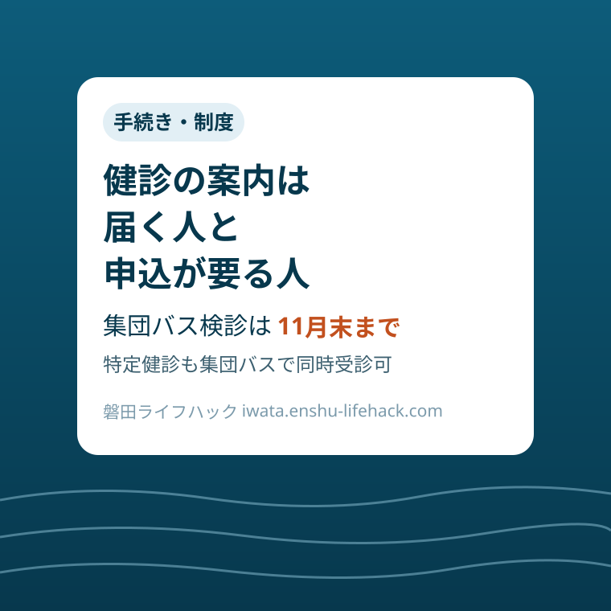

手続き・制度
磐田市の特定健診・がん検診の受診券｜案内が届く人・申込が要る人、集団バス検診は11月末まで

この記事の要点
Q. 磐田市の特定健診・がん検診は、案内が届けば受けられますか？
A. がん検診の案内は、過去4年間に市の検診を受けた方などへ4月中旬以降に個別に送られています。初めて受ける方や受診方法を変えたい方は、先に「案内申込」が必要です。集団バス検診は11月末まで、希望日の3週間前までに予約します。集団バスでは、国保・後期高齢者の方は健康診断（特定健診・後期高齢者健診）も同時に受けられます。
導入——「受診券が届かない」は、対象外とは限らない
健診の季節になると、「うちには受診券も案内も届いていない」という声を聞きます。磐田市の特定健診・がん検診は、すべての対象者に一律で案内が郵送される仕組みではありません。届く人と、自分から申し込まないと案内が届かない人が、はっきり分かれています。
磐田市のがん検診では、過去4年間に市の検診を受けたことがある方と、20歳から38歳で偶数年齢の女性には、4月中旬以降に個別に案内が送られています。一方、市の健診を初めて受ける方は、健康増進課への「案内申込」をしないと、そもそも日程案内が届きません。
もう一つ、今の時期ならではの事情があります。集団バス検診の実施期間は5月から11月で、検診日程は11月末までです。11月18日の今からでも、希望日の3週間前までの予約という条件を考えると、動ける日は限られます。
この記事は受診を勧める記事ではありません。受けるかどうかは体調や治療の状況も含めて本人が決めることです。ここでは、受けると決めたときに迷わないための、案内の届き方・対象・自己負担・期限だけを、市公式の一次情報で整理します。
先に結論を書きます。案内が届いている人は、健診機関へ直接予約します。届いていない人で初めて受ける場合は、まず案内申込です。毎年受けている人は申込不要で、案内は4月下旬頃から順次送られています。
まず、公式資料から事実を整理する
磐田市の公式ページ「総合がん検診」（ページ番号1001865、2026年9月7日更新）によると、がん検診の対象は磐田市民で、対象年齢は令和9年3月31日時点の年齢です。誕生日を迎えたかどうかではなく、年度末の年齢で判断します。
受け方は二つあります。一つは集団バス検診で、実施期間は5月から11月、検診日程は11月末までです。会場はiプラザ（総合健康福祉会館）、総合体育館（かぶと塚公園内）、ゆめりあ球技場、各地区の交流センター、ららぽーと磐田（女性限定）などです。希望日の3週間前までに予約が必要です。
もう一つは医療機関で受ける方法で、実施期間は6月から翌年3月までです。ただし医療機関で受けられるのは、子宮頸がん検診と乳がん検診（エコー）のみです。それ以外の検診は、集団バス検診で受ける形になります。
集団バス検診では、国民健康保険と後期高齢者医療制度に加入している方は、がん検診と同時に健康診断を受けることができます。同時に受けられるのは、特定健康診査（国保の方）と後期高齢者医療健康診査（後期高齢者の方）です。がん検診と特定健診を別々の日に分ける必要がないのは、この集団バスの仕組みの大きな特徴です。
特定健診そのものは、加入している健康保険（保険者）が実施する健診で、静岡県の公式ページでは、国民健康保険の特定健康診査は40歳から74歳までの被保険者を対象とし、生活習慣病の前段階であるメタボリックシンドロームの該当者と予備群を見つける健診だと説明されています。会社員の方などは勤務先や加入する保険者からの案内が入口になるため、市の案内とは別に、自分の保険者の案内も確認してください。

受診の流れは、市のページで五つの段階に整理されています。申し込みをする、日程案内が届く、日時を予約する、問診票などが届く（集団バスの場合）、受診する、という順序です。案内が届いたあとの予約は、健診機関へ直接行います。
注意点も先に挙げておきます。年度内に同じ検診を重複して受けた場合、2回目以降は後日実費をいただくとされています。同年度内に職場の健診などでそれぞれの検診を受ける機会がある方は、市のがん検診を受ける必要はない、と市は案内しています。
生活保護世帯の方は無料ですが、事前に無料券の申し込みが必要です。検診当日までに市外へ転出した方は転出先で受診することとされ、磐田市へ転入した方でがん検診を希望する方は、健康増進課へ問い合わせるよう案内されています。
がん検診の自己負担と対象年齢——項目ごとに違う
自己負担は検診ごとに異なります。結核健診・肺がん検診（レントゲン検査）は40歳以上が対象で、自己負担はなしです。喀痰検査を加える場合は、74歳以下が700円、75歳以上が500円です。65歳以上の方は年に1回、結核検診を受ける義務があるため、胸部エックス線検査を受ける機会のない方は肺がん検診を受診するよう案内されています。
大腸がん検診（検便検査）は40歳以上で、自己負担は500円です。胃がん検診（胃バリウム検査）も40歳以上で、74歳以下は1,300円、75歳以上は500円です。胃がんリスク判定（血液検査）は、過去に受けたことのない40・45・50・55・60・65・70歳の方が対象で、自己負担は1,300円です。
前立腺がん検診（血液検査）は50歳以上の男性が対象で、74歳以下は1,500円、75歳以上は1,000円です。ここで大切なのは、75歳以上の自己負担額は、年度末の年齢ではなく、検診を受診する日の年齢で支払うとされている点です。対象年齢の数え方と、金額の数え方で、基準日が違うのです。
乳がん検診は二種類あります。エコー検査は20歳から38歳で偶数年齢の女性が対象で、自己負担は1,300円です。マンモグラフィは40歳以上で偶数年齢の女性が対象で、74歳以下は2方向（40歳から48歳）で1,800円、1方向（50歳から74歳）で1,000円、75歳以上は500円です。
子宮頸がん検診（細胞診）は20歳以上で偶数年齢の女性が対象で、74歳以下は1,300円、75歳以上は500円です。女性の検診は「偶数年齢」という条件が重なるため、奇数年齢の年は対象外になります。自分の年度末年齢が偶数かどうかが、まず確認すべき一点です。
がん検診と並んで、骨粗しょう症検診（前腕骨のレントゲン検査）は40・45・50・55・60・65・70歳の女性が対象で自己負担700円、肝炎ウイルス検診（血液検査）は過去に受けたことのない40歳から74歳の方が対象で自己負担1,100円です。「過去に受けたことがないこと」が条件の項目は、受けた記憶があるかどうかで対象が変わります。
結核・肺がん検診と大腸がん検診は、地区の巡回バス検診でも受診できます。日程は広報いわたに随時掲載されるため、集団バスの会場日程と合わせて確認してください。
案内の届き方——届く人と、申込が要る人
ここがこの記事の中心です。磐田市の公式ページ「健康診断・がん検診の案内申込」（ページ番号1001872、2026年2月5日更新）によると、案内申込が必要なのは、市の健診を初めて受ける方と、健康診断の受診方法を変更したい方です。
申し込むと、市から日程などの詳細な健診案内が、令和8年4月下旬頃より順次送付されます。逆に、すでに市へ申し込みをしている方と、毎年健康診断を受診している方は申込不要で、同様の案内が4月下旬頃より順次送付されます。
がん検診の案内については、「総合がん検診」のページに、過去4年間に磐田市のがん検診を受けたことがある方と、20歳から38歳で偶数年齢の女性へ、4月中旬以降に個別に案内を送っていると書かれています。しばらく受けていない方は、この「過去4年間」から外れている可能性があります。
もう一つ見落としやすい条件があります。前年度に子宮頸がん・乳がん検診のみを受診された40歳以上の方で、その他のがん検診を希望される方は、新規に申し込みが必要です。「去年案内が来たから今年も来る」とは限らないのです。

申込方法は、WEBの申込フォームか電話です。電話は健康増進課（電話0538-37-2011、平日午前8時30分から午後5時15分）で、氏名・生年月日・希望の受診方法などを聞かれます。案内の再発行も電話で問い合わせるよう案内されています。
なお、案内申込のページからは、健診項目や日時の予約はできません。案内が届いたあと、健診機関へ直接予約するのが順序です。令和8年度からは、後期高齢者医療制度に加入している方も集団バス健診が選べるようになりました。開業医健診から集団バス健診へ変えたい方は、この案内申込から申し込みます。
磐田の暮らしに置き換える——11月の今から動く場合
11月の今、集団バス検診に間に合わせるには、逆算が必要です。日程は11月末までで、予約は希望日の3週間前まで。つまり、月末近くの日程を狙うなら、今週のうちに予約へ進む必要があります。
案内が手元にある人は、健診機関へ直接予約の電話を入れてください。案内がない人で、過去4年間に市の検診を受けた覚えがある場合は、案内が届いていた可能性があります。再発行は健康増進課への電話で相談できます。
初めて受ける人や、しばらく受けていない人は、案内申込から始めるため、集団バスの今期日程に間に合うかは申込のタイミング次第です。間に合わない場合でも、子宮頸がん検診と乳がん検診（エコー）は医療機関で翌年3月まで受けられます。検診ごとに出口が違うことを覚えておいてください。
夫婦や親子で確認する場合は、保険の種類を分けて考えてください。国保と後期高齢者の方は集団バスでがん検診と健康診断を同時に受けられますが、会社員の方は特定健診の入口が勤務先や保険者側にあります。同じ「健診」でも、案内の出どころが世帯の中で違うのです。
評価——良い点と、注文したい点
良い点は、集団バス検診で、がん検診と健康診断（特定健診・後期高齢者健診）を同時に受けられることです。一度の外出で済む仕組みは、平日に何度も休みを取りにくい人にとって大きな助けになります。令和8年度から後期高齢者の方も集団バスを選べるようになった点も、前進です。
良い点はもう一つ、自己負担が項目ごとに公式ページで明示されていることです。無料の肺がん検診から、500円の大腸がん検診、1,300円の胃がん検診まで、受ける前に金額の見通しが立ちます。
注文したい点は、案内の届き方が分かりにくいことです。「過去4年間に受けた方へ個別案内」「初めての方は案内申込」「毎年受ける方は申込不要」という三つの条件が、二つのページに分かれて書かれています。自分がどれに当たるかを、封筒が届かない理由と結びつけて説明する一枚の案内がほしいところです。
注文したい点はもう一つ、「受診券」という言葉で探す人への案内が薄い点です。市の健診は、届くものを「案内」「日程案内」と呼ぶ運用で、他市のような受診券の郵送を前提に探すと、市のページにたどり着きにくくなります。呼び方の違いそのものを、案内ページの冒頭で説明してほしいと感じます。
対案・結論——まず「届く人かどうか」を確かめる
結論として、この制度で最初にやるべきことは、検診の予約ではなく、自分が「案内が届く人」かどうかを確かめることです。過去4年間に市の検診を受けたか、毎年受けているか、初めてか。この振り分けで、次の一手がまったく変わります。
届く人に当たるのに案内が見当たらない場合は、健康増進課へ再発行の相談を。初めての方や受診方法を変えたい方は、WEBフォームか電話で案内申込をしてください。
集団バス検診を考えている方は、11月末という期限と、3週間前までの予約という条件を、今日の日付と並べて見てください。間に合わない項目があっても、医療機関で翌年3月まで受けられる項目が残っていないかを確認するところまでが、一連の段取りです。
自覚症状がある方は、検診を待たずに速やかに医療機関を受診するよう、市も案内しています。医療機関で受診中の方は、検診を受けるかどうかを主治医に相談してください。検診は、症状のない人のための仕組みです。
確認する順番
- 自分の年度末年齢（令和9年3月31日時点）と、受けたい検診の対象年齢・偶数年齢の条件が合うかを確かめる
- 過去4年間に市の検診を受けたか、毎年受診しているかを確認し、案内が届く人に当たるかを振り分ける
- 案内が届いていない初めての方・受診方法を変えたい方は、WEBフォームか健康増進課（0538-37-2011）へ案内申込をする
- 案内が届いたら、集団バス検診は希望日の3週間前までに、健診機関へ直接予約する（日程は11月末まで）
- 国保・後期高齢者の方は、集団バスでがん検診と健康診断（特定健診など）を同時に受けられるかを予約時に確認する
家族で共有するための記録
受けた検診の項目と日付は、記録に残してください。胃がんリスク判定と肝炎ウイルス検診は「過去に受けたことがないこと」が対象条件のため、受けた記録そのものが、次に受けられるかどうかの判断材料になります。
家族の分を確認するときは、保険の種類と、過去4年間の受診歴を一人ずつ聞き取るのが近道です。「案内が来ていない」という一言の裏に、初めてだからなのか、4年以上受けていないからなのか、理由が分かれて隠れています。
大石の視点
大石の視点として、この制度でいちばん惜しいのは、受ける意思がある人が「案内が届かない」という最初の段で止まってしまうことです。対象外なのではなく、手続きの入口が違うだけ、という場合が少なくありません。
健診の案内は、届く人には何もしなくても届き、届かない人には自分から取りに行く仕組みです。その分かれ目を知っているかどうかで、受けられるかどうかが決まってしまいます。11月の今は、集団バスの期限が迫る時期でもあります。まず自分の立ち位置を確かめるところから始めてください。
まとめ
磐田市の特定健診・がん検診は、案内が自動で届く人と、案内申込が必要な人に分かれています。集団バス検診は5月から11月末まで、医療機関は6月から翌年3月まで（子宮頸がん検診と乳がん検診エコーのみ）です。
自己負担は、肺がん検診はなし、大腸がん検診500円、胃がん検診1,300円（75歳以上500円）など、項目ごとに決まっています。国保・後期高齢者の方は、集団バスで健康診断も同時に受けられます。
この記事で扱った範囲
- がん検診の対象は磐田市民、対象年齢は令和9年3月31日時点の年齢。75歳以上の自己負担は受診日の年齢で計算
- 集団バス検診は5月から11月末まで・3週間前までに予約。医療機関は6月から翌年3月まで、子宮頸がん検診と乳がん検診（エコー）のみ
- 案内は過去4年間に受診した方などへ個別送付。初めての方と受診方法を変えたい方は案内申込が必要
- 集団バスでは国保・後期高齢者の健康診断（特定健診・後期高齢者健診）をがん検診と同時に受けられる